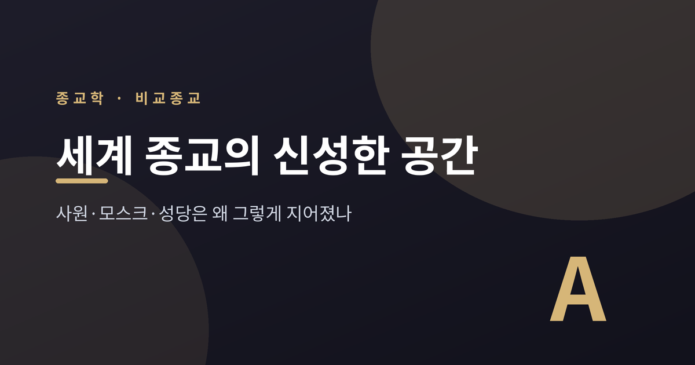
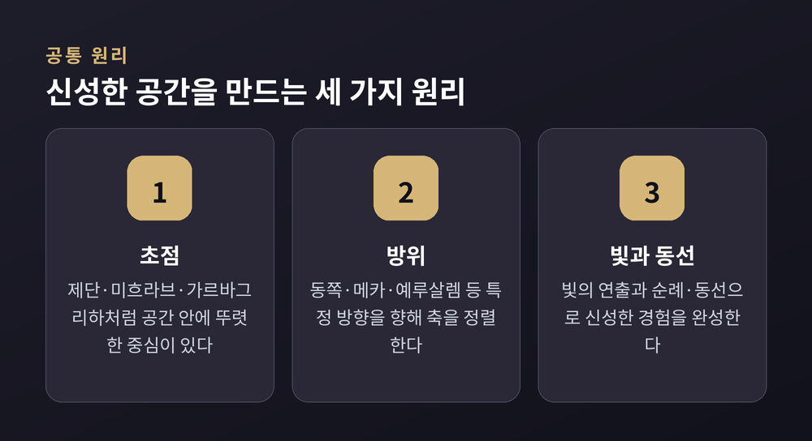
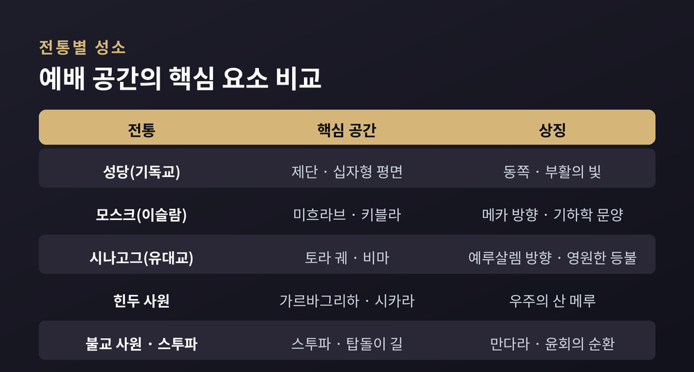
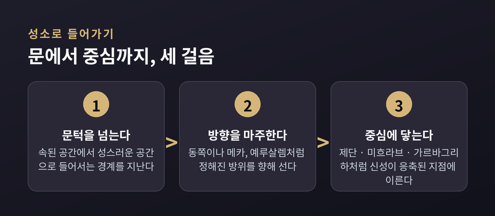
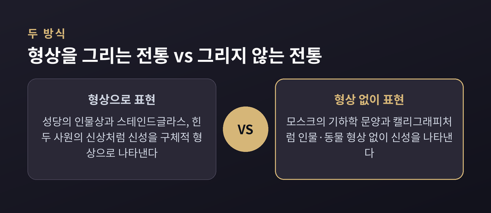

사원·모스크·성당은 왜 그렇게 지어졌나

오늘은 세계 종교의 예배 공간이 어떤 원리로 지어지는지 이야기해 보려 합니다. 성당의 십자형 평면, 모스크의 미흐라브, 시나고그의 토라 궤, 힌두 사원의 첨탑, 불교 스투파까지 — 서로 다른 전통이 신성한 공간을 짓는 방식을 비교종교학의 시선으로 정리해 보겠습니다. 특정 신앙의 우열을 가리려는 글이 아니라, 건축이 각 전통의 세계관을 어떻게 담아내는지 살펴보는 글입니다.
루마니아의 종교학자 미르체아 엘리아데는 인간이 공간을 두 가지로 경험한다고 말합니다. 질서와 초월적 의미로 채워진 성스러운 공간, 그리고 방향성 없이 균질한 속된 공간입니다.
엘리아데에 따르면 성스러운 공간이 성립하려면 그 중심에 '세계의 중심'이 있어야 합니다. 이 중심과 짝을 이루는 개념이 세계축, 곧 악시스 문디(axis mundi)입니다. 하늘과 땅, 지하세계를 잇는 상징적 축으로, 나무나 산·도시·기둥의 모습으로 나타나기도 합니다. 기독교의 십자가, 북유럽 신화의 세계수 위그드라실, 일본의 후지산이 모두 이 축의 사례로 꼽힙니다.
전통 건축은 이 세계축의 이미지를 즉물적으로 옮겨놓는 경우가 많습니다. 바빌로니아의 지구라트는 하늘의 층위를 관통하는 우주의 산을 본떠 세워졌고, 예루살렘 성전의 반석은 태초의 물까지 닿는 것으로 여겨졌습니다. 뒤에서 살펴볼 힌두 사원의 첨탑, 불교 스투파의 상륜, 고딕 성당의 첨탑 역시 형태는 다르지만 '땅에서 하늘로 이어지는 수직의 중심'이라는 같은 문법을 공유합니다.
다만 이 이론은 20세기 종교현상학이 내놓은 대표적 해석 중 하나일 뿐, 모든 종교학자가 동의하는 정설은 아니라는 점은 짚어두어야 합니다.

중세 유럽의 많은 성당은 신랑과 트랜셉트, 성가대석이 결합해 십자가 모양을 이루는 십자형 평면을 따릅니다. 라틴 크로스형에서는 신랑이 트랜셉트보다 길어서, 신자가 입구에서 제단까지 걸어가는 동선 자체가 십자가를 그리게 됩니다.
방위도 중요한 요소입니다. 전통적으로 제단은 동쪽을 향해 배치됩니다. 떠오르는 해를 바라보는 방향으로, 부활과 그리스도의 재림을 상징합니다. 회중이 모이는 신랑과 정문은 서쪽 끝에, 제단이 있는 성가대석은 동쪽 끝에 놓이는 구조입니다.
빛의 연출은 고딕 성당에서 특히 두드러집니다. 12세기 프랑스의 아봇 쉬제르는 생드니 대성당을 재건하며 고딕 양식의 초석을 놓은 인물로 꼽힙니다. 그는 신플라톤주의 신학의 영향 아래, 빛은 신에게서 직접 나오는 것이며 인간의 정신을 지상에서 천상으로 끌어올린다고 보았습니다. 그가 재건한 성가대석은 늑골 궁륭과 방사형 소성당, 가느다란 기둥, 스테인드글라스로 채워져 그 스스로 '새로운 빛(lux nova)'이라 부른 효과를 만들어냈습니다.
첨두아치와 플라잉 버트레스는 신랑의 하중을 바깥으로 분산시키는 구조적 장치입니다. 그 덕분에 벽 자체를 거대한 스테인드글라스 창으로 열 수 있었습니다. 동쪽 끝의 화려한 장미창을 통해 이른 아침 햇빛이 들어오도록 설계된 성당도 적지 않습니다. 결국 고딕 성당은 첨탑과 궁륭, 빛이 관통하는 유리창을 통해 신자를 신비적 상승으로 이끄는 것을 건축적 목표로 삼았다고 볼 수 있습니다.
모스크 예배 공간의 방향적 초점은 키블라, 곧 메카를 향한 방향입니다. 이 방향을 표시하는 벽의 벽감이 미흐라브이며, 모스크에서 가장 정교하게 장식되는 자리입니다. 꾸란 구절이 새겨지는 경우가 많고, 설교단인 민바르와 함께 예배의 시선이 모이는 지점을 이룹니다.
미너렛은 모스크에 딸린 높은 탑으로, 하루 다섯 차례의 예배 시각을 알리는 아잔이 도시 전역에 울려 퍼지도록 설계됐습니다. 이라크 사마라의 나선형 미너렛부터 오스만 튀르키예의 가늘고 뾰족한 '연필형' 미너렛까지, 지역과 시대에 따라 형태가 다양합니다.
가장 눈에 띄는 특징은 장식에서 인간이나 동물의 형상이 거의 등장하지 않는다는 점입니다. 우상숭배로 이어질 수 있다는 우려 때문입니다. 대신 기하학 문양과 식물 문양인 아라베스크, 서예가 벽면과 돔을 채웁니다. 이런 문양은 낙원의 약속을 환기하는 상징적 장치로 해석됩니다. 돔 내부는 기하학적이고 별 모양이거나 식물 문양인 정교한 패턴으로 채워져, 보는 이를 경외감으로 이끌도록 설계됩니다.
같은 신성을 형상이 아니라 문자와 기하학으로 표현한다는 점에서, 인물상과 스테인드글라스로 신성을 시각화하는 기독교 성당과는 뚜렷이 대비됩니다.

시나고그의 핵심 요소는 토라 두루마리를 보관하는 토라 궤(아론 하코데시)와, 토라를 낭독하는 단상인 비마입니다. 이 두 요소는 시나고그가 언제 어디에 지어졌든 공통으로 나타납니다. 토라 궤는 흔히 예루살렘을 향하도록 배치되어, 기도의 방향과 일치시킵니다. 비마의 위치는 전통마다 다릅니다. 아쉬케나지 전통은 회중석 중앙에 두는 경향이 있고, 세파르디 전통이나 현대 개혁파·보수파 시나고그는 궤와 비마를 양 끝에 배치하거나 비마를 궤 앞 전면으로 옮기기도 합니다. 궤 곁에는 영원한 등불인 네르 타미드가 늘 켜져 있어, 신의 영원한 임재를 상징합니다.
힌두 사원의 가장 안쪽에는 가르바그리하, 곧 '자궁의 방'이 있습니다. 창이 없는 어두운 이 방은 주신의 형상을 모시며, 신성이 태어나는 자궁을 상징합니다. 북인도 나가라 양식에서는 그 바로 위에 곡선형 첨탑인 시카라가 세워지는데, 이는 힌두 우주론의 우주의 산, 메루산을 상징하며 신을 향한 시각적 상승을 형상화합니다. 가르바그리하를 둘러싼 공회당과 마당, 외벽은 성스러운 중심에서 바깥의 세속적 영역으로 갈수록 낮아지는 층위를 나타낸다고 해석됩니다.
불교의 스투파는 흙·물·불·바람·공이라는 다섯 요소에 대응하는 기본 형태로 구성됩니다. 기단부는 좌선하는 다리를, 둥근 돔은 몸을, 첨탑은 머리 혹은 깨달음을 상징한다고 풀이됩니다. 학자들은 스투파를 불교적 세계관을 담은 입체 만다라로 설명하기도 합니다. 스투파를 시계방향으로 도는 의례인 프라닥시나, 곧 탑돌이는 경의와 기억, 수행의 신체적 표현입니다. 순례자들은 시계 방향으로 걸으며, 이는 생의 여정과 윤회의 순환을 상징한다고 해석됩니다. 정면에 예배당이 더해지면서 스투파는 독립된 상징물에서, 둘레에 탑돌이 통로를 갖춘 예배의 중심으로 발전했습니다.

신앙 체계가 전혀 달라도 신성한 공간이 공유하는 패턴이 몇 가지 있습니다. 먼저 공간에 뚜렷한 초점이 있다는 점입니다. 제단, 미흐라브, 토라 궤, 가르바그리하, 스투파의 중심부가 모두 그런 초점의 예입니다. 다음으로 빛의 연출이 의도적으로 설계된다는 점, 그리고 신성한 핵심 공간이 주변보다 천장이 높거나 공간감이 확장되어 있다는 점도 여러 전통에서 공통으로 나타납니다.
방위는 특히 아브라함계 종교에서 뚜렷합니다. 기독교는 동쪽을, 유대교는 예루살렘 방향을, 이슬람은 메카 방향을 향해 예배 공간의 축을 정렬합니다. 힌두 사원도 태양 상징에 맞춰 동쪽 입구를 선호하는 경향이 있습니다.
빛은 고딕 성당의 스테인드글라스뿐 아니라, 힌두 사원의 어두운 가르바그리하와 그 바깥 공간의 밝기가 이루는 대비, 모스크 돔의 채광까지 — 여러 전통에서 신성한 감각 경험을 구성하는 핵심 장치로 거듭 등장합니다.
동선과 순례는 특히 남아시아·동아시아 전통에서 두드러집니다. 불교의 탑돌이처럼 신체를 움직여 신성한 중심을 도는 의례가 있는가 하면, 기독교 성당의 십자형 평면은 신자가 입구에서 제단까지 걸어가는 동선 자체가 십자가를 그리도록 설계됐다는 해석도 있습니다.

정리하면 이렇습니다.
서로 다른 재료와 기후, 언어로 지어졌지만, 성당의 첨탑도 사원의 시카라도 스투파의 상륜도 결국 같은 질문에 답하고 있습니다.
"여기가 하늘과 땅이 만나는 자리."
건축은 신학책보다 먼저, 그리고 더 오래 그 답을 몸으로 전해온 셈입니다.
다음에 성당이나 모스크, 사원 앞을 지나가게 된다면 한 번쯤 걸음을 늦춰 보시길 권합니다. 문 안쪽의 방위와 빛, 걸어 들어가는 동선 하나하나가 실은 누군가의 우주관이 아니겠냐고 묻는다면, 저는 그렇다고 답하겠습니다.